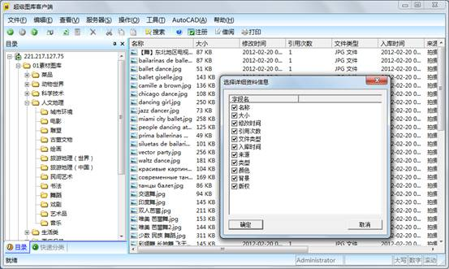
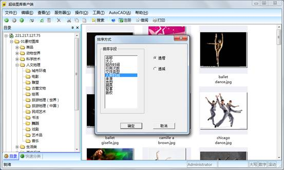
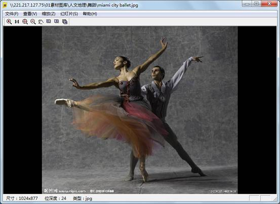
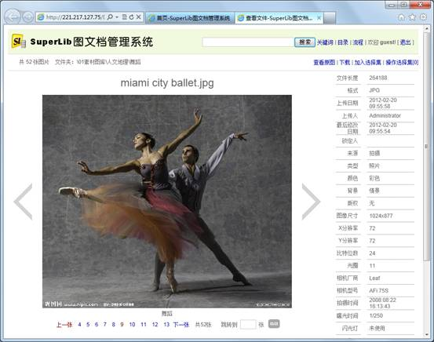
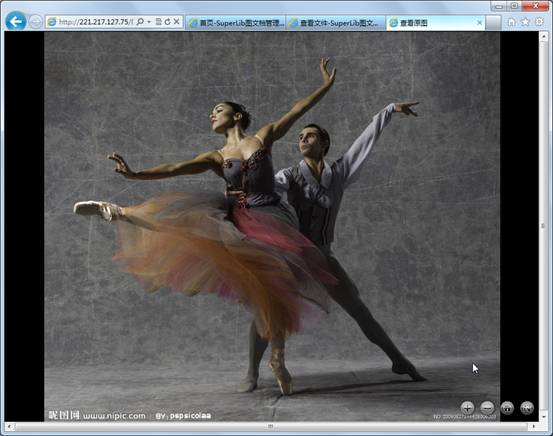

首页 >> 产品 >> 超级图库管理软件 >> 网络版 >> 功能介绍
浏览
目录树视图和文件列表视图
在客户端软件和控制台软件中均提供目录树视图和文件列表视图，如下图所示。
客户端软件中显示的目录树和文件列表
网页浏览器中显示的目录树和文件列表
客户端的文件列表除了提供缩略图形式的视图外，还提供大图标、小图标、列表、详细资料视图，其中详细资料视图还可选择显示各列的信息，如下图所示。

在客户端软件中的文件列表的详细资料视图
客户端的文件列表不论处于哪种视图模式，都可选择排序方式，可按名称、大小、时间等各种属性排序，如下图所示。

在客户端软件中的排序方式选择对话框
查看预览图和原图
在客户端中，双击一张图片，可打开软件内置的看图窗口，如下图所示。

客户端软件中的看图窗口
在此看图窗口中，根据用户的权限不同，软件会自动选择显示预览图或原图。当用户对此图片只有浏览权限时，看图窗口会显示图片的预览图。当用户对此图片有下载权限时显示原始图片。
看图窗口的功能，包括放大、缩小、全图充满显示、1:1显示（实际尺寸）、平移、上一张、下一张、幻灯片播放等。
在网页浏览器中，点击一张图片的缩略图后，进入查看文件详情页面，如下图所示。

网页浏览器中的查看文件详情界面
在网页浏览器的查看文件详情页面中，显示了图片的预览图和各种属性。我们在后面会再解释这些属性。
可以点击上一张、下一张或直接跳转到第n张。点击"查看原图"链接后，可查看高清原图，如下图所示。

网页浏览器中的查看原图页面
在查看原图页面中，可以进行放大、缩小，支持用鼠标滚轮进行放大缩小操作，还有"充满显示"和"全屏切换"按钮。